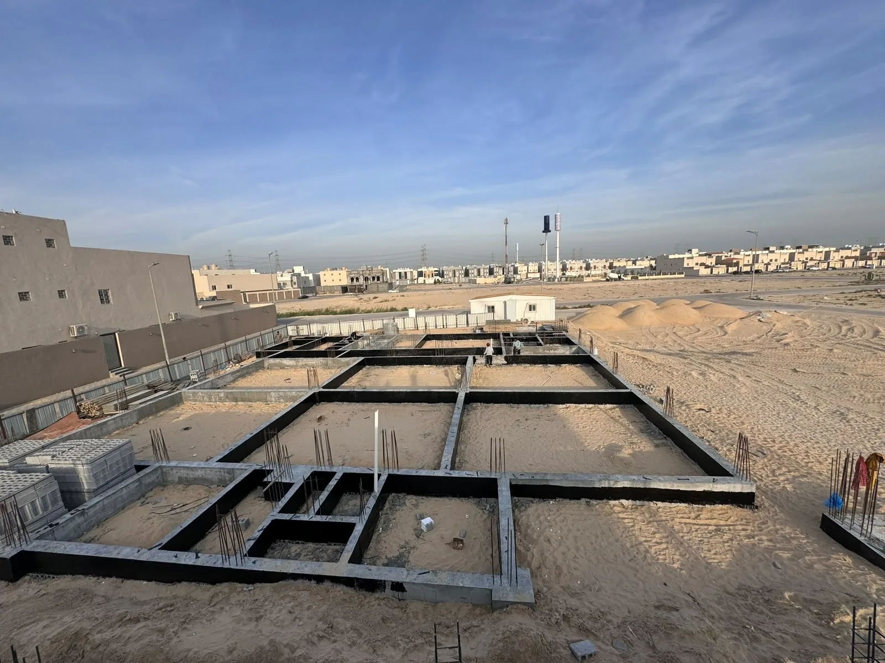

في المشروع الذي يضم أعمالًا مدنية وإنشائية وكهرباء وسباكة وتكييف وواجهات وتشطيب، قد يصبح التنسيق بين عدة مقاولين عبئًا على المالك. اختيار شركة مقاولات وإنشاءات متكاملة في الرياض يمكن أن يوحد المسؤولية والبرنامج والتقارير، لكنه يحتاج إلى تعريف دقيق لما تديره الشركة وما يبقى على المصمم أو المشرف أو المالك.
التكامل لا يعني تنفيذ كل شيء بفريق واحد بالضرورة؛ بل وجود إدارة واحدة تنظم المقاولين المتخصصين والموردين والاعتمادات ضمن خطة مشتركة. القيمة تظهر عندما تقل التعارضات، وتتضح الأولويات، ويعرف كل طرف موعده ومرجعه.
1. ما المقصود بالمقاولات والإنشاءات المتكاملة؟
هي إدارة نطاق يربط الحزم الرئيسية للمشروع من الأعمال التمهيدية والهيكل إلى الأنظمة والتشطيبات والاستلام. قد تكون بعض الأعمال ذاتية وبعضها عبر متخصصين، لكن الشركة الرئيسية تدير التسلسل والجودة والعلاقات.
يجب ألا يُفهم التكامل كعبارة تسويقية عامة. اطلب قائمة حزم واضحة، ومسؤوليات التصميم والتوريد، وحدود الضمان، ومن يدير الاستفسارات والاعتمادات.
2. متى تكون الجهة الواحدة أفضل؟
تكون مناسبة للمشاريع التي تحتوي على تخصصات مترابطة أو برنامج ضيق أو مالك لا يريد إدارة عقود منفصلة. تشمل الأمثلة الفلل تسليم مفتاح، وتجهيز المكاتب والمحلات، وترميم المباني الذي يجمع إصلاحات وإنشاءات وأنظمة وتشطيب.
أما إذا كان نطاق المشروع صغيرًا جدًا أو توجد إدارة مشروع مستقلة قوية، فقد تكون عقود التخصصات مناسبة. القرار يعتمد على قدرة المالك على التنسيق ومستوى التعقيد.
3. اربط التصميم بالتنفيذ قبل بدء الموقع
تُراجع المخططات المعمارية والإنشائية وMEP وقابلية التنفيذ والكميات قبل تقسيم الحزم. تُحصر التعارضات والأسئلة والمواد طويلة التوريد، ثم تُحدد الأولويات التي يجب اعتمادها.
هذه المراجعة تقلل القرارات الميدانية وتسمح ببناء برنامج واقعي. كما تكشف ما إذا كان النطاق يحتاج مخططات تنفيذية إضافية أو تفاصيل من مورد متخصص.
4. نسق الأعمال الكهربائية والميكانيكية مع الإنشاء
مسارات التكييف والصرف والكابلات واللوحات تؤثر على الفتحات والارتفاعات والأسقف. الشركة المتكاملة تنظم ورش تنسيق وتُثبت المسارات قبل الصب أو الإغلاق.
تُراجع كذلك متطلبات الاختبار والتشغيل والصيانة، ومواقع الوصول إلى الصمامات والفلاتر واللوحات. الهدف ليس إخفاء الأنظمة فقط، بل إبقاؤها قابلة للخدمة.
5. أدر المشتريات مع البرنامج
المواد طويلة التوريد قد تتحكم في موعد المشروع. تُنشأ سجلات للاعتماد والطلب والتصنيع والتسليم والفحص، وتُربط بالأنشطة التي تعتمد عليها.
إذا تغيرت مادة، يُراجع أثرها على المقاس واللون والتركيب والصيانة والضمان، وليس السعر وحده. البدائل المعتمدة مسبقًا تقلل التوقف.
6. ضع نقاط فحص بين الحزم
قبل انتقال الموقع من العظم إلى التمديدات أو من التمديدات إلى الإغلاق أو من العزل إلى التشطيب، توجد نقاط استلام تمنع توريث العيوب. تُغلق الملاحظات ويُوثق القبول.
هذه الطريقة تحمي المقاول التالي أيضًا، لأنه يستلم سطحًا أو نظامًا جاهزًا وفق شروط محددة بدل تحمل مشكلة سابقة.
7. اضبط البرنامج والتقارير
البرنامج المتكامل يوضح الأنشطة الحرجة والاعتمادات والمشتريات والعلاقات بين التخصصات. ويُحدّث مع التقدم الفعلي، بدل بقاء نسخة أولية لا تعكس الموقع.
التقرير الدوري يلخص المنجز والقادم والمخاطر والقرارات والمواد والملاحظات. هذه المعلومات تساعد المالك على التدخل في الوقت المناسب.
8. اجعل التغيير قرارًا موثقًا
أي تعديل في مساحة أو مادة أو نظام قد يؤثر على عدة حزم. يُرفع طلب تغيير يوضح السبب والحل والتكلفة والمدة والمخططات المتأثرة قبل التنفيذ.
هذا النظام يمنع تكرار احتساب الأعمال ويجعل الميزانية النهائية قابلة للتتبع. كما يوضح الفرق بين عيب يجب إصلاحه وتغيير طلبه المالك.
9. تعاود كشركة مقاولات وإنشاءات بالرياض
تقدم شركة تعاود للمقاولات العامة خدمات البناء والإنشاءات والتشطيب والترميم والديكور وMEP في الرياض، مع التركيز على ربط المراحل ونطاق العمل والمتابعة.
يمكن تحديد الخدمة كحزمة مستقلة أو مشروع تسليم مفتاح، وفق المستندات وحالة الموقع واحتياج العميل.
هل تريد مناقشة مشروعك في الرياض؟
شاركنا نوع المشروع وموقعه والمرحلة الحالية والمخططات أو الصور المتاحة لنساعدك في تحديد نطاق العمل المناسب.
طلب استشارة أو عرض سعرالخلاصة
اختيار شركة مقاولات وإنشاءات متكاملة يكون مفيدًا عندما يحتاج المشروع إلى تنسيق كثيف ومسؤولية موحدة. النجاح لا يأتي من عدد الخدمات المكتوبة، بل من وضوح الحزم والبرنامج والجودة والتقارير والتغيير. راجع هذه العناصر قبل مقارنة السعر النهائي.
تابع أدلة المقاولات والبناء
انتقل إلى الدليل المحوري أو الأدلة المرتبطة، ثم إلى الخدمة عندما تصبح جاهزًا للتنفيذ.